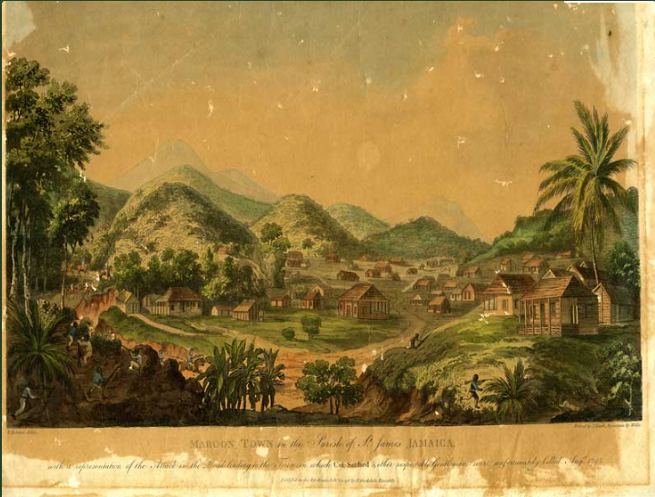
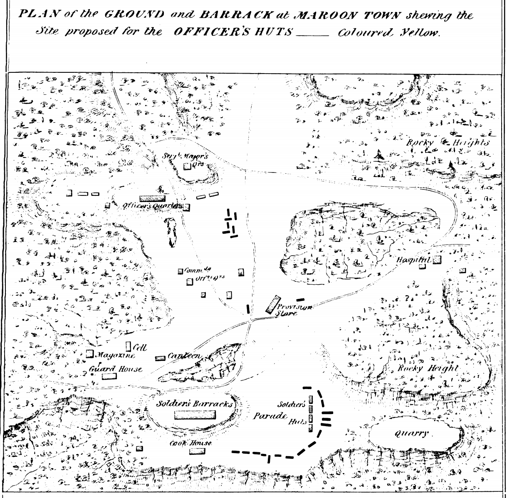
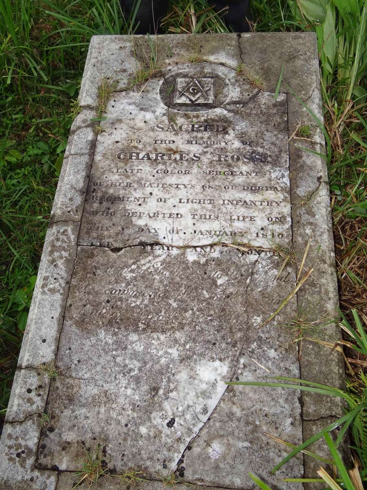

Abstract
Mainstream Caribbean historiography attributes the architectural and economic development of interior Jamaica entirely to post-1655 British colonial infrastructure or traditional Maroon adaptation. However, primary source documentation and architectural anomalies from the 18th century reveal significant structural and material realities that contradict this timeline. This paper isolates unexplained instances of advanced stone masonry, heavy megalithic alterations, and substantial undocumented gold reserves within Trelawny Town prior to British occupation. By analyzing these gaps, we propose an alternative migration model: a pre-colonial, highly organized European military presence—possessing advanced stone-masonry and defensive engineering knowledge—utilizing the impenetrable topography of the Cockpit Country as a strategic stronghold.Keywords: Trelawny Town, Knights Templar, Freemasonry, Charles Ross, Cockpit Country, Historical Anomalies, Maroon History.
Introduction: The Geographical Fortress
The Cockpit Country of Jamaica is a unique limestone karst topography defined by steep, conical hills, sinkholes, and a labyrinth of subterranean cave systems. Historically, it is celebrated as the sovereign territory of the Leeward Maroons, who successfully forced the British Empire into a peace treaty in 1739.
However, a critical examination of the physical and archival evidence reveals that the infrastructure of this interior fortress contains anomalies that neither British colonial records nor traditional West African or indigenous Taíno architectural traditions can account for. The standard narrative claims the interior was a blank wilderness until the arrival of runaway populations. Yet, primary sources reveal a pre-existing layer of civilization that points to an earlier, highly organized occupation.
Section I: The Wealth Anomaly and Undocumented Gold
A foundational pillar of alternative historical analysis requires accounting for wealth that exists outside of known economic systems. In her seminal work, The Maroons of Jamaica 1730-1830, historian Mavis Campbell uncovers a profound archival clue from records preserved in Scotland. A colonial informant explicitly stated that the Trelawny Town Maroons possessed a hidden treasury containing "more gold than two [men] could carry."
This cache presents an absolute logical contradiction to mainstream history based on two distinct factors:
- The Geological Reality: Jamaica possesses no significant gold vein deposits. It is structurally impossible for this wealth to have been mined locally in the interior.
- The Technological Reality: The Maroons were highly skilled guerrilla fighters, hunters, and agriculturalists; they did not operate industrial metallurgical refineries or commercial gold mining operations.
If this massive quantity of gold was neither mined locally nor generated via plantation commerce, it must have been recovered. This evidence points directly to a massive, pre-cached treasury hidden deep within the limestone vaults of the Cockpit Country long before the British invasion—a hallmark of a fleeing, wealthy military order seeking absolute isolation.
Section II: The Anomalous Stone Masonry
The physical layout of Trelawny Town has long baffled architectural historians. While 18th-century prints often depict timber-framed "board houses" styled after British colonial templates, the physical earth tells a different story.
Frank Cundall, the prominent historian and long-time secretary of the Institute of Jamaica, documented substantial, highly sophisticated stone structures deep within the interior near Trelawny Town. Cundall was so struck by these anomalies that he commissioned artists to meticulously draw the ruins. These structures feature advanced European-style masonry techniques, yet:
- The Maroons did not build them: Their early defensive architecture relied on temporary, organic materials or utilizing natural limestone ridges for cover.
- The British did not build them: Official petitions submitted to the Jamaican House of Assembly between 1792 and 1795 by White Superintendents (including John James and Thomas Craskell) explicitly state that the British government had failed to erect any official infrastructure, housing, or barracks within Trelawny Town. The superintendents routinely petitioned for "lodging money" because no European stone buildings had been constructed for them.


If neither the sovereign Maroons nor the occupying British built these stone foundations, we are forced to look at a timeline that predates both. These ruins represent a permanent, durable European architectural footprint established in the hidden interior centuries before British colonization.
Section III: The Pre-Columbian Contact Anomaly and the Missing Columbus Logs
To understand how an advanced, treasure-bearing European military order could establish a stronghold in the Jamaican interior centuries before British colonization, we must re-examine the primary nautical records of the Spanish conquest. A profound historical clue is preserved in a letter published by researcher Michael Irvine, written by Dr. Channer, detailing the specific anomalies of Christopher Columbus’s second voyage in 1494.
While charting the southern coast of Cuba, Columbus’s shore party landed to forage for freshwater. During this excursion, a scout ventured inland and witnessed an extraordinary sight: a group of men clad in distinct, heavy garments that precisely matched the iconic, uniform attire of the medieval Knights Templar—long white robes or tunics.
Upon receiving this report, combined with indigenous Cuban intelligence regarding a highly civilized, clothed, and gold-rich population living directly to the south, Columbus became obsessed. Traditional historiography relies on the highly dismissive explanation by Dr. Channer and mainstream academics who claim the scout merely witnessed a flock of tall tropical birds (such as flamingos or cranes) and mistook them for clothed men. This explanation falls apart under critical analysis:
- The Navigational Pivot: A veteran maritime explorer would not upend an entire imperial expedition based on a misidentified flock of birds. Following this event, Columbus spent days pondering the intelligence before abruptly steering his fleet due south, directly targeting Jamaica.
- The Erased Record: Columbus was famously meticulous, documenting every league, terrain feature, and native interaction to justify his funding to the Spanish Crown. Yet, the specific personal journal covering this precise architectural and geographical pivot to Jamaica is completely missing from the historical record.
The strategic removal of this specific diary suggests a deliberate institutional cover-up. The Spanish Crown could not allow the global record to show that a rogue, sovereign European military order had already beaten them to the Caribbean and established a fortified repository for their wealth. When Columbus landed in Jamaica, he was not searching for an empty island; he was actively hunting the Templar remnants who had fled the freezing climates of North America for the absolute tactical security of the Cockpit Country.
Section IV: The Expanded Physical Proof and Megalithic Footprints
When analyzed through the lens of specialized European engineering, the structural earthworks of old Trelawny Town show scale operations that completely pre-date traditional colonial settlement footprints. Two major material realities reinforce this:
Carved directly into the absolute stone core of the site lies a highly unique, subterranean "swimming pool" reservoir structure—widely recognized as the oldest engineered recreational or ritual bath structure in Jamaica. The laborious task of carving neatly leveled basin contours straight out of native bedrock requires heavy tools, steady engineering plans, and prolonged occupation. It stands completely distinct from any emergency military trenching or standard domestic agrarian infrastructure typical of the 18th century.
Historical regional mapping places a massive, specialized stone quarry at the bottom-right perimeter of the old settlement bounds, marking the exact source where the uniform building block stones were meticulously cleaved.

Crucially, in the early 1970s, the Jamaican government mobilized a coordinated blasting operation to entirely clear this quarry site, hauling the massive stone yields out to Montego Bay to "dump up" and fill coastal wetlands for modern development. This institutional dismantling effectively obscured the raw industrial scale of the original builders, hiding the monumental footprint of the settlement's early architectural source material.
The site maintains a strict alignment along sacred geometric commandery axes alongside highly complex, stone-lined hydraulic escape tunnels and tiered bottleneck ditches. These parameters identical layout concepts deployed by medieval military orders to maintain absolute spatial protection over deep interior vaults and secure redoubts.
Section V: The Esoteric Link and the Ancient Cemetery
The thread binding these ancient architectural anomalies to European esoteric orders extends into the modern era via documentation published by the District Grand Lodge of Jamaica and the Cayman Islands. A prominent grave marker located in Maroon Town marks the final resting place of Charles Ross, who passed in 1840. The tombstone features a highly explicit depiction of the Masonic Square and Compasses—a direct visual lineage to the stone-mason guilds tightly bound to historical Templar networks.
Ross's tombstone identifies him as the Treasurer of the Durham Faithful Lodge No. 297, connected to the 68th Regiment of Light Infantry. Over the decades, this specific site has acted as a quiet pilgrimage destination for international travelers from the United States and Europe, seeking out the deep esoteric roots buried in the hills.

Crucially, this esoteric placement unifies the mystery of the broader, ancient cemetery documented by Frank Cundall. Cundall's investigation into the graveyard's oldest plots revealed a striking anomaly: despite the site later being utilized as a standard British military sanatorium and outpost station, the old graveyard records show practically no traditional British soldier burials save for one. The question of who occupied these ancient plots long before the 68th Regiment arrived points straight back to an unrecorded, highly organized community of early European initiates who preserved the secrets of the Cockpit Country across generations.
Conclusion: A Call for Radiocarbon and Field Archaeology
The combined weight of the archival, navigational, and physical evidence presented in this paper demands an immediate paradigm shift in Caribbean history. Mainstream historiography can no longer comfortably rely on the narrative that the interior Cockpit Country was an untouched wilderness prior to British colonization, nor can it ignore the profound structural anomalies embedded within the landscape of Trelawny Town.
The architectural record—corroborated by the explicit complaints of British Superintendents who found no Crown-built infrastructure upon their arrival—proves the British did not build the advanced stone masonry Cundall documented. The geological record proves the Maroons could not have mined the massive gold treasury documented in the Scottish archives. Finally, the maritime record—marred by the deliberate erasure of Columbus's 1494 personal logs following a confirmed sighting of Templar-clad figures—points directly to a highly organized, pre-colonial European group operating in the region centuries before the English invasion.
The Knights Templar migration model provides the missing link that seamlessly unifies these distinct anomalies. It accounts for the presence of medieval European stone-cutting marks, advanced Levant-style subterranean hydraulic engineering, and a pre-cached wealth hoard hidden deep within an impenetrable natural fortress.
To move this thesis from an unassailable logical deduction to an absolute empirical certainty, this paper issues a formal challenge to independent researchers, local heritage societies, and open-minded archaeologists to initiate direct field investigations at the Trelawny Town site, focusing on:
- LIDAR Mapping: Utilizing aerial laser scanning to pierce the canopy of the Cockpit Country, mapping the full, true extent of the anomalous geometric earthworks and stone foundations.
- Mortar Analysis: Conducting radiocarbon and chemical dating on the structural mortar binding the limestone ruins documented by Cundall to scientifically establish their true century of construction.
- Speleological Subterranean Surveys: Systematically exploring the sealed cave networks and tunnels branching out from the town's perimeter to locate the subterranean vaults and structural anomalies left behind by the island's true first European inhabitants.